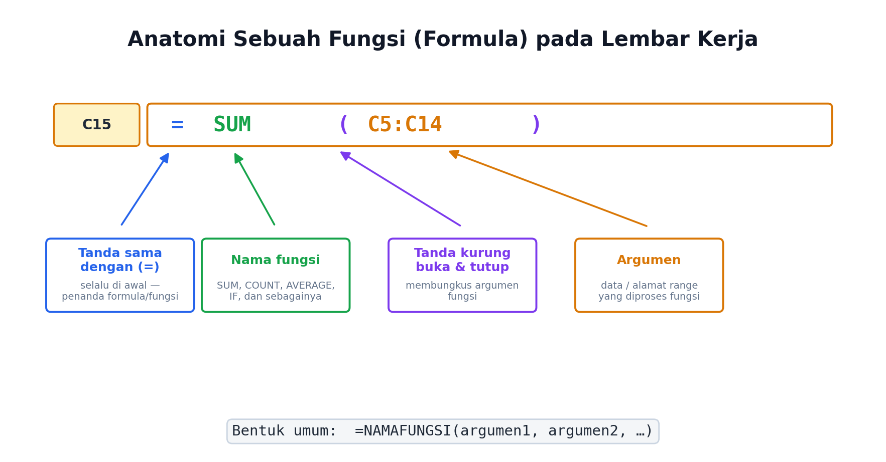
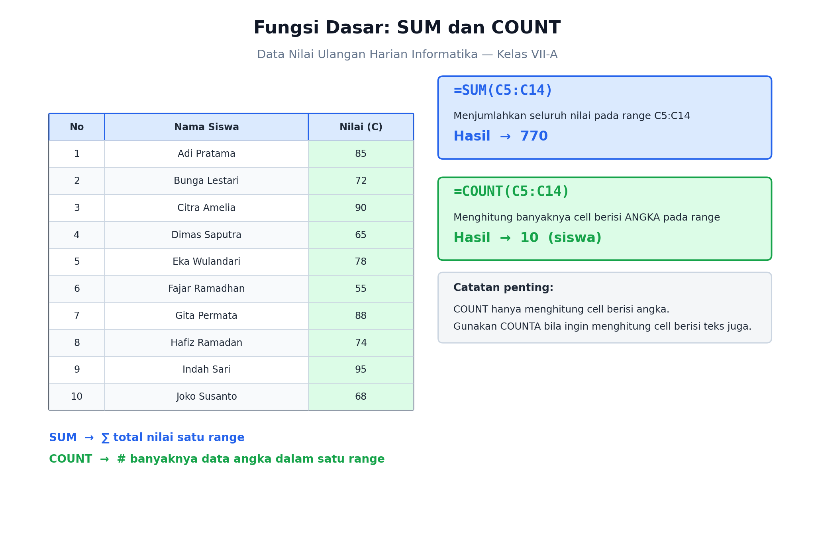
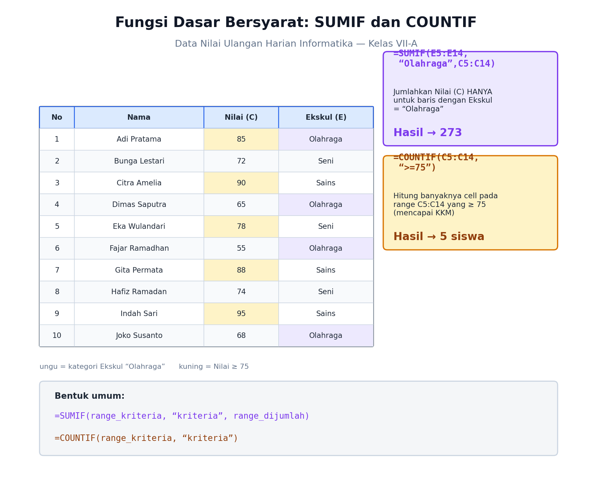
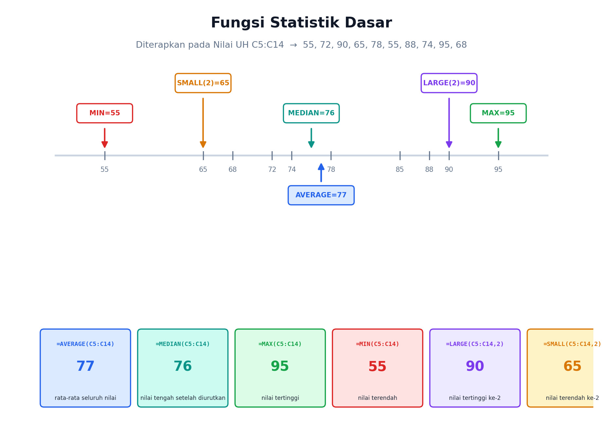
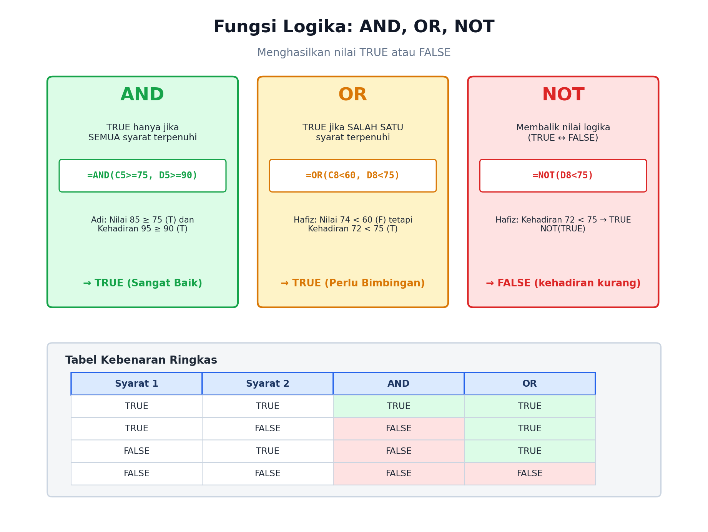
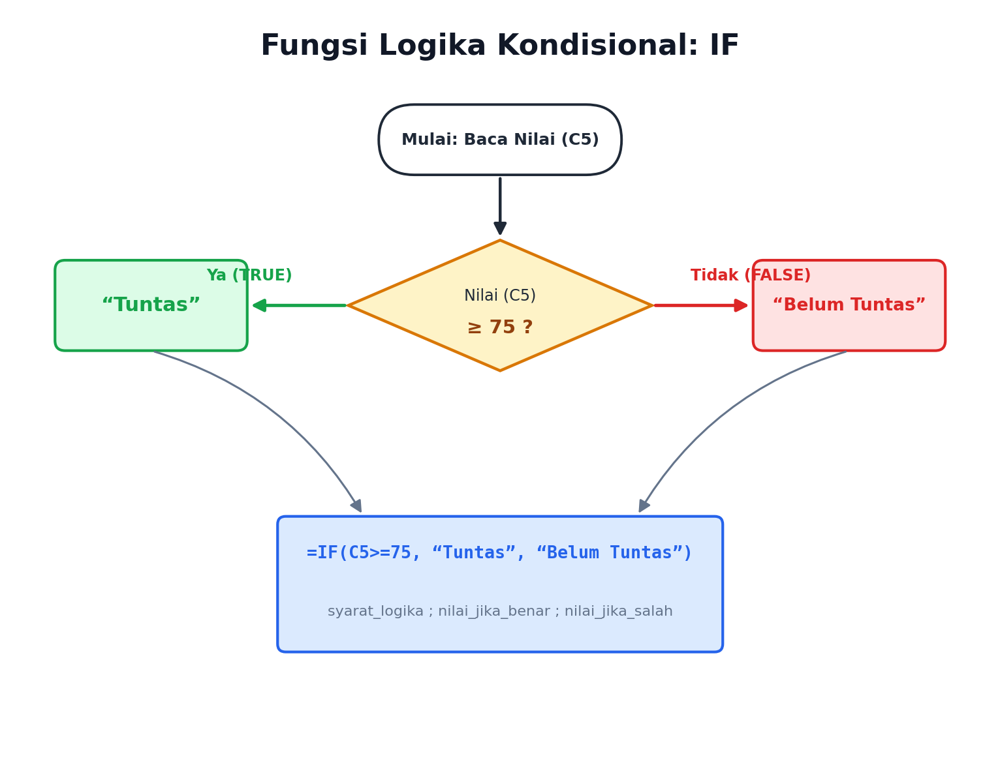
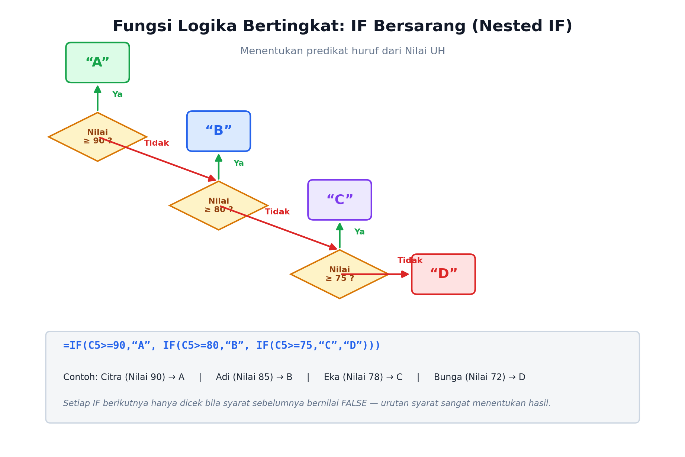

Di pertemuan sebelumnya, kita sudah kenalan sama “dapur” aplikasi lembar kerja — Ribbon, Formula Bar, cell, range, sampai Freeze Panes. Sekarang saatnya kita mulai masak beneran! 🍳
Bayangin kamu jadi ketua kelas, dan wali kelas minta tolong olah data nilai ulangan harian teman-temanmu — 10 orang. Ngitung total, rata-rata, siapa yang lulus KKM, satu-satu pakai kalkulator? Duh, lama banget dan gampang salah. Nah, di sinilah fungsi (formula) lembar kerja jadi penyelamat. Cukup satu baris rumus, komputer yang kerja, kamu tinggal lihat hasilnya!
Data yang Akan Kita Pakai
Sepanjang materi ini, kita akan terus pakai satu data yang sama supaya kamu bisa lihat perbandingannya dengan jelas: Data Nilai Ulangan Harian Informatika Kelas VII-A, berisi Nilai (kolom C), persentase Kehadiran (kolom D), dan Ekstrakurikuler (kolom E) dari 10 siswa, pada baris 5 sampai 14.
| No | Nama Siswa | Baris | Nilai (C) | Kehadiran % (D) | Ekskul (E) |
|---|---|---|---|---|---|
| 1 | Adi Pratama | 5 | 85 | 95 | Olahraga |
| 2 | Bunga Lestari | 6 | 72 | 88 | Seni |
| 3 | Citra Amelia | 7 | 90 | 98 | Sains |
| 4 | Dimas Saputra | 8 | 65 | 80 | Olahraga |
| 5 | Eka Wulandari | 9 | 78 | 92 | Seni |
| 6 | Fajar Ramadhan | 10 | 55 | 70 | Olahraga |
| 7 | Gita Permata | 11 | 88 | 96 | Sains |
| 8 | Hafiz Ramadan | 12 | 74 | 72 | Seni |
| 9 | Indah Sari | 13 | 95 | 99 | Sains |
| 10 | Joko Susanto | 14 | 68 | 82 | Olahraga |
1. Anatomi Sebuah Fungsi
Sebelum masuk ke fungsi-fungsi spesifik, yuk kenalan dulu sama “anatomi” sebuah fungsi — bagian-bagian penyusunnya selalu sama, apa pun nama fungsinya.

- Tanda sama dengan (=) — selalu di paling depan, penanda kalau ini formula, bukan teks biasa.
- Nama fungsi — misalnya SUM, COUNT, IF, dan sebagainya.
- Tanda kurung — membungkus argumen (data yang diproses fungsi).
- Argumen — bisa berupa angka, alamat cell, atau range, dipisah dengan koma bila lebih dari satu.
=NAMAFUNGSI(argumen1, argumen2, …)2. Fungsi Dasar: SUM dan COUNT
Dua fungsi paling sering dipakai buat olah data angka.

SUM — menjumlahkan
=SUM(C5:C14) akan menjumlahkan semua nilai dari C5 sampai C14. Hasilnya 770.
COUNT — menghitung banyak data angka
=COUNT(C5:C14) menghitung ada berapa cell berisi angka di range itu. Hasilnya 10 (karena ada 10 siswa).
COUNTA.3. Fungsi Dasar Bersyarat: SUMIF dan COUNTIF
Gimana kalau kita cuma mau menjumlahkan atau menghitung data yang memenuhi syarat tertentu? Di sinilah SUMIF dan COUNTIF berperan.

SUMIF — jumlahkan kalau memenuhi syarat
=SUMIF(E5:E14,"Olahraga",C5:C14) artinya: cek kolom Ekskul (E5:E14), kalau isinya “Olahraga”, jumlahkan Nilai (C) di baris yang sama. Hasilnya 273.
COUNTIF — hitung kalau memenuhi syarat
=COUNTIF(C5:C14,">=75") artinya: hitung berapa banyak cell di C5:C14 yang nilainya lebih besar atau sama dengan 75. Hasilnya 5 siswa.
">=75") harus diapit tanda kutip dua.4. Fungsi Statistik Dasar
Selain total dan banyak data, kita sering perlu tahu gambaran umum sebaran data — misalnya rata-rata, nilai tengah, tertinggi, dan terendah.

5. Fungsi Logika: AND, OR, NOT
Fungsi logika dipakai untuk menguji sebuah syarat, dan hasilnya selalu TRUE (benar) atau FALSE (salah).

AND — semua syarat harus benar
=AND(C5>=75,D5>=90) baru TRUE kalau nilai ≥75 DAN kehadiran ≥90 dua-duanya terpenuhi.
OR — salah satu syarat cukup
=OR(C8<60,D8<75) sudah TRUE kalau SALAH SATU syarat terpenuhi, walau syarat lainnya belum tentu.
NOT — membalik hasil
=NOT(D8<75) membalik logika: kalau D8<75 hasilnya TRUE, maka NOT-nya jadi FALSE, begitu juga sebaliknya.
6. Fungsi Logika Kondisional: IF
Nah, ini dia fungsi favorit banyak orang — IF bisa bikin lembar kerja “mengambil keputusan” otomatis berdasarkan syarat tertentu.

=IF(C5>=75,"Tuntas","Belum Tuntas") artinya: kalau nilai di C5 lebih besar atau sama dengan 75, tulis “Tuntas”; kalau tidak, tulis “Belum Tuntas”.
=IF(syarat_logika, nilai_jika_benar, nilai_jika_salah)7. Fungsi Logika Bertingkat: IF Bersarang (Nested IF)
Gimana kalau kategorinya lebih dari dua, misalnya predikat A/B/C/D? Kita bisa “menumpuk” beberapa IF sekaligus — ini yang disebut nested IF.

=IF(C5>=90,"A",IF(C5>=80,"B",IF(C5>=75,"C","D"))) — dibaca dari luar ke dalam: kalau nilai ≥90 → “A”. Kalau tidak, cek lagi: kalau ≥80 → “B”. Kalau tidak, cek lagi: kalau ≥75 → “C”. Kalau semua syarat di atas gagal → “D”.
Rangkuman
- SUM & COUNT → total dan banyak data angka.
- SUMIF & COUNTIF → total dan banyak data yang memenuhi satu syarat.
- AVERAGE, MEDIAN, MAX, MIN, LARGE, SMALL → menggambarkan sebaran data (statistik dasar).
- AND, OR, NOT → menguji satu atau lebih syarat, hasilnya TRUE/FALSE.
- IF → mengambil keputusan otomatis berdasar satu syarat; nested IF untuk lebih dari dua kategori.
Sekarang kamu sudah punya “kotak perkakas” fungsi dasar yang powerful banget buat olah data. Di pertemuan berikutnya, kita akan lanjut ke Pengolahan Data Lanjutan — mengurutkan (Sort), menyaring (Filter), dan validasi data. Sampai ketemu lagi! 👋
Uji Pemahaman
Coba jawab 5 pertanyaan singkat ini untuk mengecek pemahamanmu. Klik salah satu pilihan!